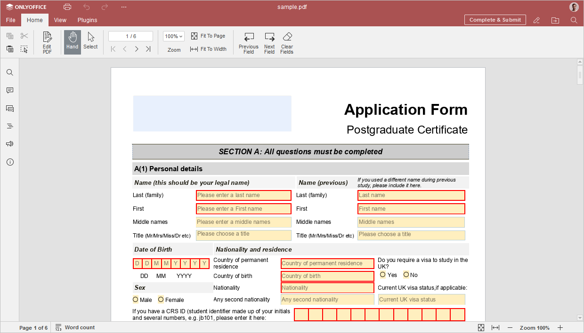

Popunjavanje obrasca
Možete popuniti polja u PDF obrascu i nakon popunjavanja poslati, štampati ili preuzeti obrazac. Ukoliko imate odgovarajuća prava pristupa, možete preći u režim uređivanja klikom na dugme Uredi PDF na gornjoj alatnoj traci.
Kako popuniti obrazac:
-
Otvorite PDF fajl.

- Popunite sva obavezna polja. Ako obrazac sadrži polje za datum, izaberite datum pomoću birača datuma. Obavezna polja su označena crvenom ivicom. Koristite dugmad Prethodno polje ili Sledeće polje na gornjoj alatnoj traci za navigaciju između polja ili kliknite na polje koje želite da popunite.
- Koristite dugme Obriši polja da biste ispraznili sva polja za unos.
- Koristite alate za navigaciju kroz PDF, podešavanje zuma, prilagođavanje prikaza stranici ili širini.
-
Nakon što popunite sva polja, kliknite na dugme Pošalji na gornjoj alatnoj traci da biste poslali obrazac na dalju obradu. Imajte u vidu da ovu akciju nije moguće poništiti. Obrazac se ne može poslati dok nisu popunjena sva obavezna polja.
Ukoliko koristite server verziju ONLYOFFICE Docs, prisustvo dugmeta Pošalji zavisi od konfiguracije. Ukoliko konfiguracija za slanje obrasca nije podešena, dugme će biti prikazano kao Sačuvaj kao. Pročitajte ovaj članak za više informacija.
U desktop verziji, prikazano je dugme Sačuvaj kao umesto dugmeta Pošalji.Takođe možete koristiti dugme Štampa da štampate obrazac ili preći na karticu Fajl i preuzeti obrazac u jednom od podržanih formata.